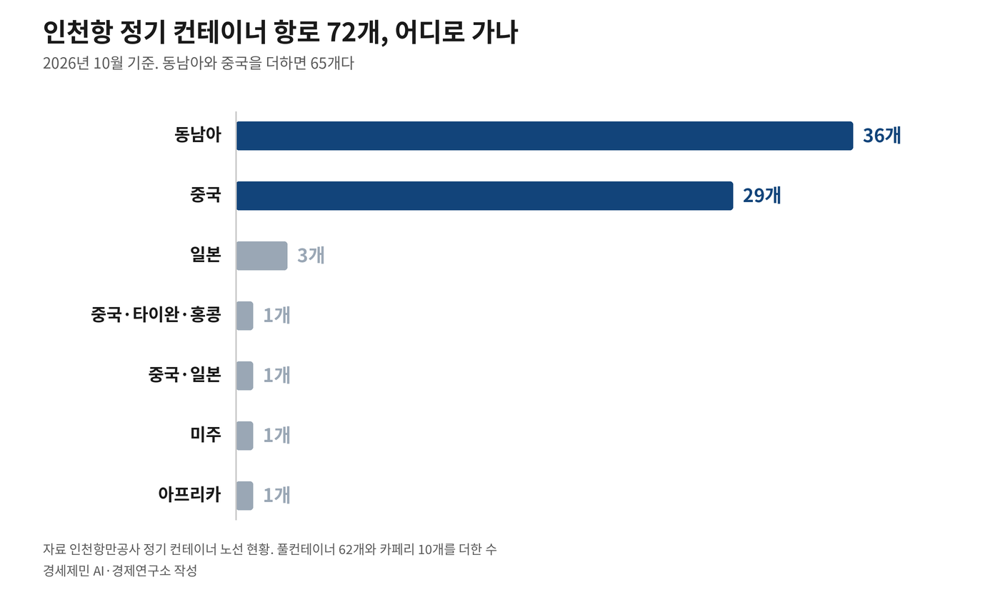
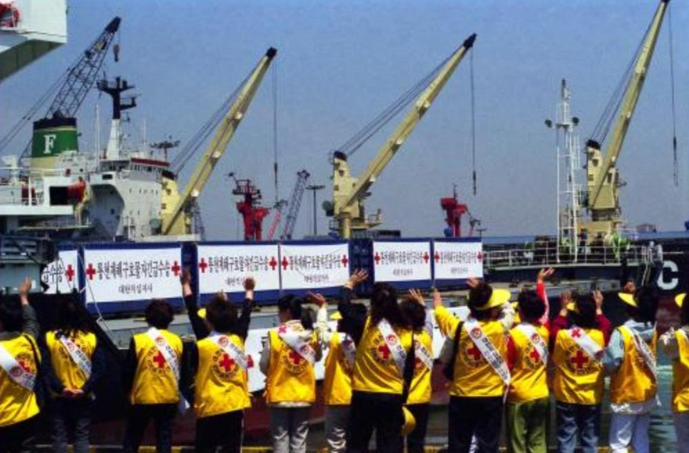
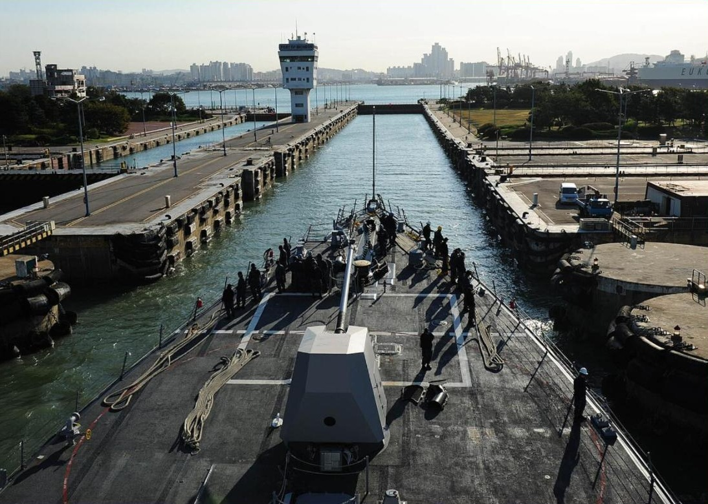
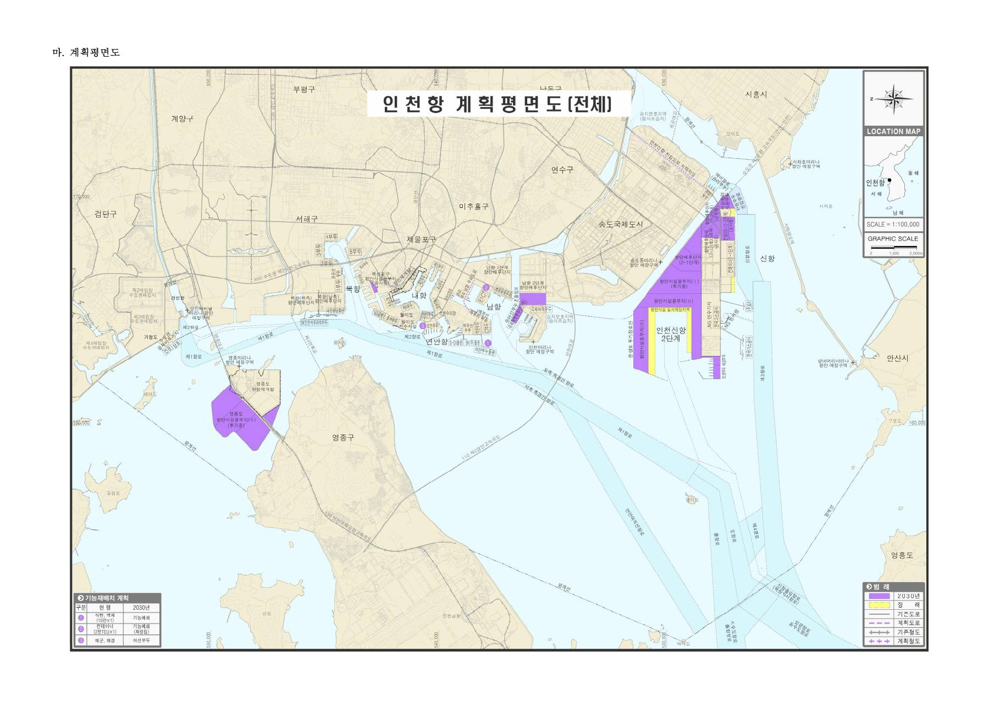
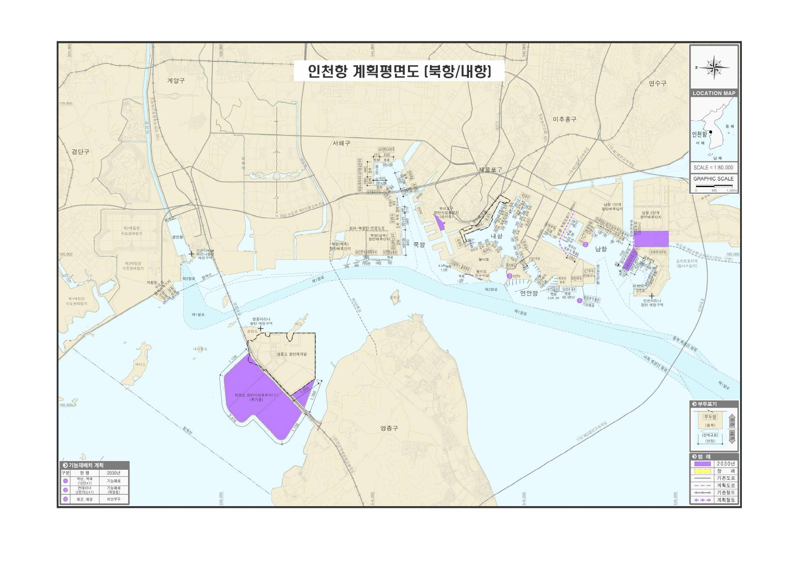
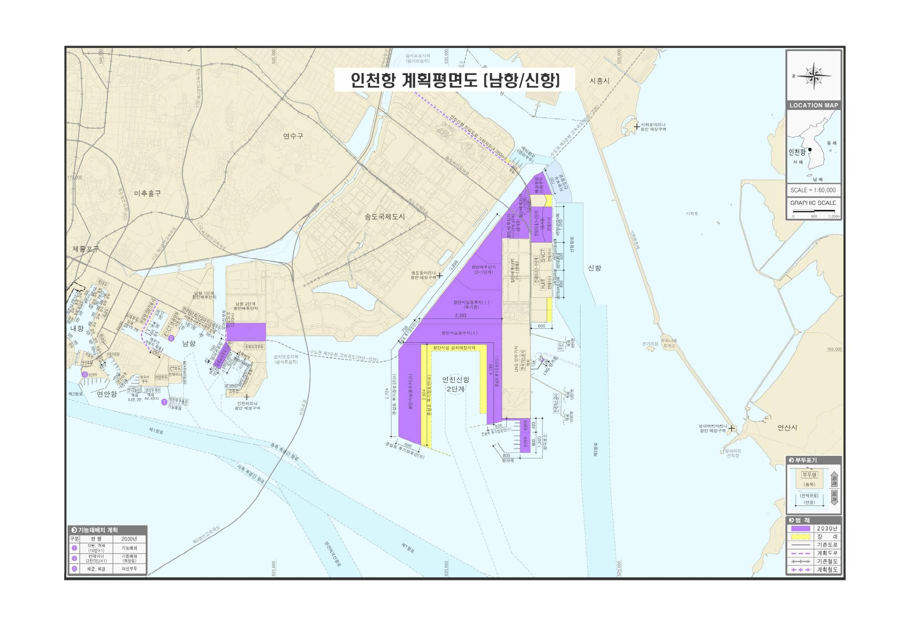
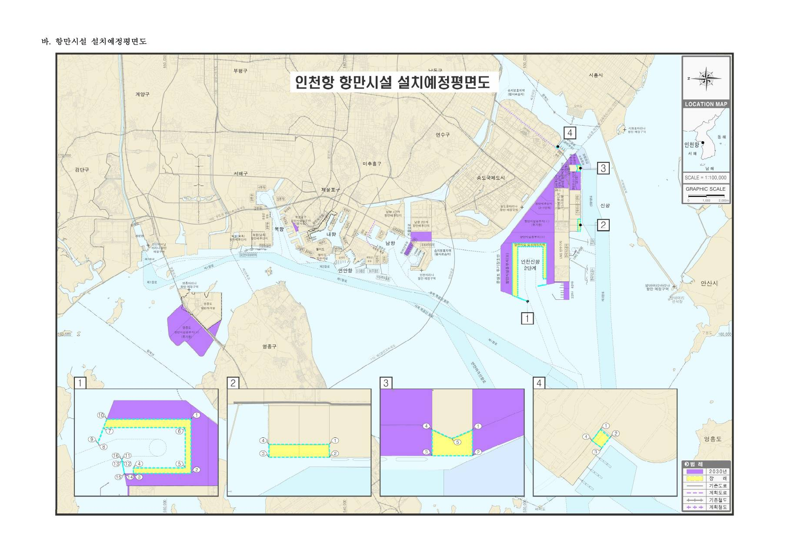
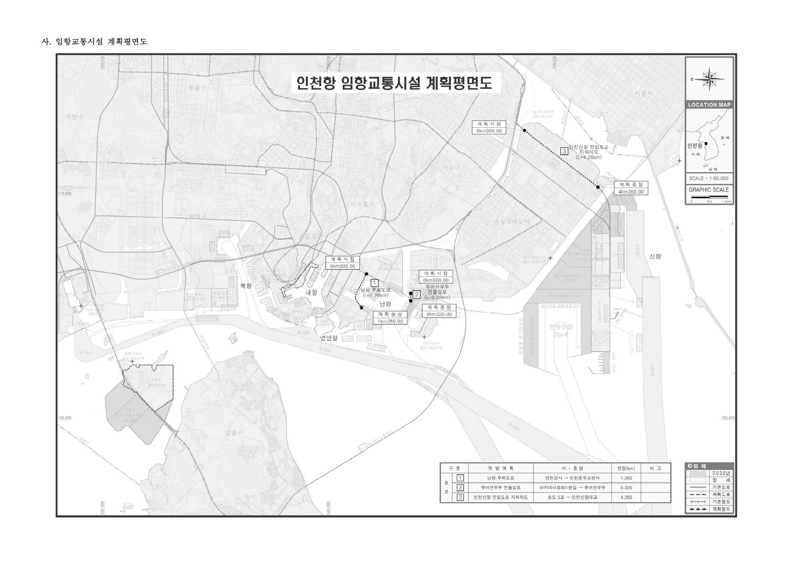

[5극3특 해양주권⑫] 7월엔 '권역별 특화', 9월엔 '같은 기능'
부산항은 환적 57%, 인천항은 정기항로 열에 아홉이 중국·동남아
북한 배가 닿았던 인천 내항, 7월 계획엔 7선석 '기능폐쇄'
정부는 2026년 9월 3일 과당경쟁이 생긴다며 부산·인천·울산·여수광양 항만공사 넷을 하나로 묶겠다고 발표했다. 해양수산부가 7월 20일 고시한 제4차 전국 항만기본계획 수정계획은 동남권을 환태평양 물류 허브로, 서해권을 대중국 교역 허브로 갈라 적었다.
부산항과 인천항이 하는 일이 어떻게 다른지, 북한 배가 닿았던 인천 내항이 어떤 자리인지, 내항 일을 누가 맡는지 사실로 짚는다.
1. 7월 계획은 두 항을 갈라 적었다
수정계획은 항만법에 따른 항만 분야 최상위 법정 계획이다. 2026년부터 2030년까지를 다룬다. 계획은 5극3특 전략에 맞춰 권역별 특화전략을 세워야 한다고 적었다. 5극3특은 초광역권 다섯과 제주·전북·강원을 키우는 정부 전략이다.
계획은 서해권을 대중국 교역 허브로 적었다. 중국발 화물을 옮겨 싣는 환적과 국가산업단지 연계로 황해를 둘러싼 환황해권의 수출입 거점 기능을 강화한다는 내용이다. 계획 인천항 편은 인천항을 '수도권 관문'이자 환황해권 첨단물류와 해양문화관광 거점항만으로 적었다.
계획은 동남권을 환태평양 스마트 물류 허브로 적었다. 부산항 신항과 진해신항을 개발해 초대형 항만인 글로벌 메가포트를 구축한다는 내용이다. 서남권과 동해권과 제주권에도 방향을 따로 적었다. 항만 권역은 다섯이다.
정부는 2026년 9월 3일 통합을 발표하며 항만공사 넷이 사실상 같은 기능을 나눠 맡아 연계가 부족하고 과당경쟁이 생긴다고 판단했다. 한 달 반 앞서 나온 수정계획 총괄 편 70쪽 어디에도 과당경쟁이라는 말은 없다.
계획에 나오는 경쟁은 각국 항만의 대형선박 유치 경쟁, 북극항로 선점 경쟁 등이다. 국내 항만공사 사이 경쟁을 적은 자리는 없다.
부산연구원 장하용 책임연구위원은 9월 29일 부산시의회에서 열린 토론회에서 항만마다 화주와 선사 같은 고객군이 완전히 갈린다고 말했다.
계획은 2030년까지 화물부두 110선석을 확충한다고 적었다. 선석은 배 한 척이 대는 자리다. 울산항이 23선석, 부산항이 18선석, 광양항이 16선석이고 인천항은 4선석이다. 인천항 넷 가운데 셋은 2025년 12월 기준 공사하고 있는 선석이다.

2. 환적 57%와 정기항로 72개
부산항만공사 집계로 2025년 부산항 컨테이너 물동량은 2488만TEU다. 3년 연속 역대 최대다. TEU는 20피트 컨테이너 1개를 세는 단위다.
그 가운데 환적이 1410만TEU로 57%쯤이다. 2025년 부산항은 세계 2위 환적 항만이다. 환적 화물 가운데 80%쯤은 외국 선사가 처리했다.
서울경제는 2026년 2월 보도에서 머스크와 하파그로이드의 선사 동맹 제미니가 북중국발 화물을 부산항에서 처리하게 노선을 조정했다고 전했다.
수정계획에 적힌 2025년 인천항 컨테이너 물동량은 344만4000TEU로 국내 2위다. 인천항만공사 집계로 2026년 10월 기준 정기 컨테이너 항로는 72개다. 동남아가 36개, 중국만 오가는 항로가 29개다. 둘을 더하면 65개로 열에 아홉이다. 배는 동남아 항로에 117척, 중국 항로에 30척이 다닌다.
미주 항로와 아프리카 항로는 하나씩이다. 72개 가운데 여객과 화물을 함께 싣는 카페리 10개는 모두 중국으로 간다. 경인일보는 2026년 8월 보도에서 한중 해운협정에 따라 북중국 항로에는 600~700TEU급 중소형 선박이 주로 투입된다는 물류업계 설명을 전했다.
수정계획은 인천항이 2025년 양곡과 모래를 전국에서 가장 많이 처리했다고 썼다.
부산항은 컨테이너 물동량 가운데 57%가 환적이고 인천항은 정기항로 72개 가운데 65개가 동남아 항로와 중국만 오가는 항로다.

3. 세 해 남북 뱃길 1위, 해주~인천
인천항에는 남북을 잇는 뱃길도 있었다.
1984년 9월 30일 북한 배 장산호가 수해복구 지원물자인 시멘트를 싣고 인천 내항 4부두에 닿았다. 북한 물자는 하루 앞서 판문점과 강원도 북평항에 닿았다. 북한의 이 지원은 1950년 6·25전쟁이 난 지 34년 만의 첫 남북 물자 교류였다.
남과 북이 2004년 맺은 남북해운합의서 제4조는 쌍방 사이 해상항로를 민족내부의 항로로 인정했다. 항로를 여는 항으로 남쪽은 인천을, 북쪽은 남포와 해주를 맨 앞에 적었다.
이성우와 신성호는 2020년 한국항만경제학회지 논문에서 남북 항만 사이 운항을 셌다. 남북 교류가 가장 활발했다고 본 2006년부터 2008년까지 세 해가 대상이다.
세 해 동안 해주와 인천 사이가 2만913회로 가장 많았다. 북한 해주 앞바다에서 캔 모래를 실어 나르는 배가 많이 다녔다. 둘째가 남포와 인천 사이로 791회였다.
이 기간 남북을 오간 컨테이너선이 북한 서해안에서 드나든 항만은 남포항 하나였다.
인천과 남포 사이 정기노선을 주 1회 다닌 배가 트레이드포춘호다. 국양해운이 운항한 2864t급 파나마 선적 화물선이다. 2002년부터 2011년까지 컨테이너 6만3552TEU와 포장하지 않은 벌크화물 15만2096t을 날랐다.

정부는 2010년 5월 24일 천안함 사태에 따른 대북 제재로 개성공단을 뺀 남북 교역을 중단했다. 트레이드포춘호는 2011년 10월 운항을 멈췄고 2012년 폐선됐다.
북한은 2026년 3월 헌법을 고쳐 통일이라는 표현을 지우고 남쪽으로 대한민국과 접한다는 영토 조항을 넣었다. 인천과 남포 사이 뱃길은 2026년 현재 끊겨 있다.
4. 갑문 안 151만㎡, 7선석 '기능폐쇄'
트레이드포춘호가 닿던 곳은 인천 내항 1부두다. 내항에 들어가려면 갑문을 지나야 한다.
인천 앞바다는 밀물과 썰물 물높이가 최대 10m 벌어진다. 인천항만공사는 그래서 물때와 상관없이 수심을 유지하는 갑문식 부두가 필요했다고 설명한다. 갑문은 바다를 막아 안쪽 물높이를 붙잡아 두는 시설이다. 지금 갑문은 1974년 5월 10일 준공됐다.
갑문 안 수면은 151만㎡다. 김윤식 전 인천문화재단 대표이사는 내항이 365일 밀물과 썰물의 영향을 받지 않는 잔잔한 호수처럼 바뀌었다고 적었다.
배가 드나드는 길은 갑거 둘이다. 갑거는 물높이를 맞춰 배를 지나게 하는 시설이다.

뭍 쪽 문에는 검문이 있다. 인천 내항은 보안 등급이 가장 높은 가급 국가중요시설이다. 사람은 출입증을 받고 차량은 검문검색을 거친다. 경인일보는 2025년 1월 사설에서 내항 1문에서 쓰던 엑스레이 검색 장비가 3문에 배치되지 않았다고 지적했다.
2026년 7월 고시한 수정계획 인천항 편 본문 열 쪽에 남북이라는 낱말은 한 번 나온다. 중장기적으로 남북협력 거점항만으로 육성한다는 구절이다. 2030년까지 짓는 시설 목록에 남북 교류 시설은 없다.
고시에 앞서 5월 해양수산부 관계자는 인천일보에 남북 협력 관련 기능은 신항 중심으로 이뤄질 것이라고 말했다. 내항은 물동량이 줄고 재개발 중이라는 이유였다. 해양수산부는 남북 교류 추이를 보고 개발 계획을 검토한다고 밝혔다.
인천항 편은 내항 1부두 다섯 선석과 8부두 두 선석을 2030년 기능폐쇄(재개발)로 적었다. 1부두 나머지 다섯 선석은 공용부두로 남는다.
인천시는 7월 내항 2~7부두 활용 계획을 남북협력 거점항만 육성계획과 맞물려 다시 마련해야 한다고 봤다.
해양수산부는 착공 앞 단계인 1·8부두 재개발 실시계획을 8월 승인했다. 인천시는 2026년 말 공사를 시작해 시민 접근을 막아 온 보안 펜스부터 걷어낸다고 밝혔다.
5. 10월 12일 국감, 내항은 누가 맡나
내항 갑문을 운영하는 곳은 인천항만공사다. 정부는 2004년 10월 인천항만공사 설립위원회에서 갑문 시설물 유지관리 업무 일체를 인천항만공사에 맡기기로 정했다.
항만 경비와 보안, 항만재개발, 남북 사이 항만 교류와 협력도 항만공사가 하는 사업이다. 근거는 항만공사법 제8조 제1항 제1호와 제2호의2와 제6호의2다.
2026년 9월 3일 발표대로 가면 네 항만공사는 한 법인이 되고 인천항만공사는 법인이 없어져 지역지사가 된다. 자회사인 인천항보안공사도 다른 항만공사 자회사 넷과 함께 가칭 한국항만보안시설공단으로 묶인다. 항만공사법 제4조는 공사를 법인으로 하고 항만별로 설립하되, 필요하면 인접한 항만 둘 이상을 관할하는 공사를 둘 수 있다고 정했다.
해양수산부는 통합 효과 분석 자료가 없는 상태로 로드맵을 마련해 검토하겠다고 신장식 조국혁신당 의원에게 전했다. 신 의원은 9월 29일 통합 결정에 의혹을 제기했다.
2026년도 국정감사는 10월 6일 시작됐다. 첫날 국회 재정경제기획위원회에 박신호 부산항만공사 노조위원장이 참고인으로 나왔다. 그는 부산항은 컨테이너 환적, 인천항은 중국 교역, 울산항은 액체화물, 여수광양항은 원자재 중심으로 기능이 서로 다르다고 말했다.
이형일 부총리 겸 재정경제부 장관은 지역 항만 특성은 유지하면서 본사와 지역지사 사이 합리적인 역할 배분 방안을 검토하고 있다고 밝혔다. 이준석 개혁신당 의원은 통합하면 본사가 부산으로 가느냐고 물었다. 이 부총리는 해양수산부를 중심으로 통합 법인 설립 추진단에서 로드맵을 만들 계획이라고 답했다.
농림축산식품해양수산위원회는 10월 12일 해양수산부를, 19일 네 항만공사를 감사한다.
7월 수정계획은 다섯 권역에 특화 방향을 따로 적었다. 해양수산부는 통합 로드맵과 법령 개정안을 2027년 초까지 마련한다는 구상이다. 해양수산부는 2025년 12월 23일 부산 청사 개청식을 열었다.
참고문헌
· 이성우·신성호, 「선박입출항 데이터를 활용한 남북 항만 간 해상운송 현황 분석」, 『한국항만경제학회지』 제36집 제4호, 한국항만경제학회, 2020년 12월, 53~73쪽. https://doi.org/10.38121/kpea.2020.12.36.4.53
· 해양수산부(2026), 『제4차 전국 항만기본계획 수정계획(2026~2030)』, 해양수산부 고시 제2026-80호, 2026.07.20. 총괄과 인천항 편. https://www.mof.go.kr/doc/ko/selectDoc.do?docSeq=67502&menuSeq=375&bbsSeq=9
· 『남북해운합의서』 제4조 항로개설, 2004.05.28. 통일부 남북회담본부 게재본. https://dialogue.unikorea.go.kr/ukd/a/ad/usrtaltotal/View.do?id=513
· 『항만공사법』 제4조 법인격 등, 제8조 사업. 국가법령정보센터, 2026.10.06. 조회. https://www.law.go.kr/법령/항만공사법
· 해양수산부(2018), "인천항 내 우리나라 최초의 갑문시설이 설치되어 운영되고 있는데요, 이 시설물의 관리 방법에 대하여 알려주세요", 자주 묻는 질문, 인천지방해양수산청 항만정비과, 2018.06.20. https://www.mof.go.kr/doc/ko/selectDoc.do?docSeq=20861&menuSeq=929&bbsSeq=27
· 인천항만공사(2026), "정기 컨테이너 노선", 2026년 10월 기준, 2026.10.09. 조회. https://www.icpa.or.kr/content/view.do?menuKey=1942&contentKey=203
· 인천항만공사(2025), 『인천항만공사, '선박 충돌 없는 갑문, 사고 없는 현장'을 위한 인공지능(AI) 기반 안전기술 본격 도입』 보도자료, 2025.06.03. https://www.icpa.or.kr/article/view.do?articleKey=30183&boardKey=213&menuKey=397¤tPageNo=1
· 인천항만공사(2024), 『우리나라 경제발전의 원동력 인천항 갑문 준공 50주년 맞아』 보도자료, 2024.05.01. https://www.icpa.or.kr/article/view.do?articleKey=27360&boardKey=213&menuKey=397¤tPageNo=1
· 서보혁(2013), "대남 수재물자 지원", 『한국민족문화대백과사전』, 한국학중앙연구원, 2023.02.07. 최종수정, 2026.10.09. 조회. https://encykorea.aks.ac.kr/Article/E0073377
· 유진주(2026), "[재정경제부 국감] "실익 없고 근거 부족"… 인천 등 전국 4개 항만공사 통폐합 추진 정부 질타", 『경인일보』, 2026.10.06. https://www.kyeongin.com/article/1772057
· 탁경륜(2026), "국감장 오른 항만공사 통폐합…여야 모두 "밀어붙이기식 통합 안 돼"", 『부산일보』, 2026.10.06. https://www.busan.com/view/busan/view.php?code=2026100617263176069
· 김현구(2026), "[2026 국감] "흑자인데 왜 통합?"…4대 항만공사 실익·본사 위치 놓고 공방", 『뉴스핌』, 2026.10.06. https://www.newspim.com/news/view/20261006001110
· 곽경호(2026), "2026 국정감사 막 올랐다…최대 쟁점은 '사법부 충돌·민생경제 책임론'", 『경인방송』, 2026.10.06. https://news.ifm.kr/news/articleView.html?idxno=480967
· 박혜랑·송현수(2026), "'글로벌 항만' 외치면서 국내시장 잣대로 통합 강행", 『부산일보』, 2026.09.29. https://www.busan.com/view/busan/view.php?code=2026092918341084095
· 이주영(2026), "[국감, 핀셋] 항만공사 통합, 대체 '왜'", 『인천일보』, 2026.09.29. https://www.incheonilbo.com/news/articleView.html?idxno=1333041
· 정혜리(2026), "4개 항만공사 통합안 국감 '검증대' 오른다", 『인천일보』, 2026.09.28. https://www.incheonilbo.com/news/articleView.html?idxno=1332999
· 곽도흔(2026), "4개 항만공사 통합 준비 착수…'한국항만공사' 추진단 논의", 『이투데이』, 2026.09.08. https://www.etoday.co.kr/news/view/2623246
· 곽도흔(2026), "4개 항만공사 '한국항만공사'로 통합…해수부 산하 공공기관 11개 감축", 『이투데이』, 2026.09.03. https://www.etoday.co.kr/news/view/2621506
· 김주엽(2026), "[뉴스분석] 인천항~북중국 잇는 정기 컨테이너 항로 10월 첫 개설", 『경인일보』, 2026.08.30. https://www.kyeongin.com/article/1769888
· 강남주(2026), "인천 내항1·8부두 해양문화공간으로 재탄생…연말 착공", 『서울신문』, 2026.08.19. https://go.seoul.co.kr/news/newsView.php?id=20260819500075
· 박예지(2026), "인천항 내항 1·8부두 재개발, 20일 최종 승인", 『중부일보』, 2026.08.19. https://www.joongboo.com/news/articleView.html?idxno=363734240
· 오세중(2026), "해수부, 인천항 내항 재개발사업 본격 추진…2029년까지 3천억 투입", 『머니투데이』, 2026.08.19. https://www.mt.co.kr/economy/2026/08/19/2026081912400436116
· 한달수(2026), "'제물포 르네상스' 재검토… 인천항, 재개발·남북교류 투트랙으로", 『경인일보』, 2026.07.21. https://www.kyeongin.com/article/1767686
· 한달수(2026), "인천항 '남북협력 거점항만' 육성… 평화경제특구 연계 필요성 지적", 『경인일보』, 2026.07.21. https://www.kyeongin.com/article/1767687
· 박예진(2026), "인천항 전략 재편…남북 협력 거점 구상", 『인천일보』, 2026.05.11. https://www.incheonilbo.com/news/articleView.html?idxno=1322608
· 조성준(2026), "北 '두 국가' 개헌…헌법에 '영토조항' 신설 '통일' 삭제", 『머니투데이』, 2026.05.06. https://www.mt.co.kr/politics/2026/05/06/2026050614545792912
· 조원진(2026), ""수출입 줄어도 끄떡없다" 부산항, 환적 4.4%↑로 역대 최대 경신", 『서울경제』, 2026.02.04. https://www.sedaily.com/article/20004853
· 조현미(2025), "해양수산부, 개청식 열고 부산시대 개막", 『어업in수산』, 2025.12.23. https://www.suhyupnews.co.kr/news/articleView.html?idxno=33991
· "[사설] 국가중요시설 인천항 내항 보안이 공백이라니", 『경인일보』, 2025.01.06. https://www.kyeongin.com/article/1725237
· 박길상(2024), "[오늘의 인천소사] 남북 최초 물자교류 수해복구물자 인천항 도착", 『인천투데이』, 2024.09.30. https://www.incheontoday.com/news/articleView.html?idxno=253994
· 이은경(2024), "[인천항 갑문 50년] 경제 발전 원동력…반세기 인천항 지키다", 『인천일보』, 2024.05.08. https://www.incheonilbo.com/news/articleView.html?idxno=1248218
· 정운(2022), "[정운의 인천물류 톺아보기 #25·끝] 인천은 '남북 교류 거점'의 최적지.", 『경인일보』, 2022.04.10. https://www.kyeongin.com/article/1711076
· 김윤식(2021), "제39화 인천항의 변모 2. 인천항 내항과 외항의 부두들", 『인천일보』, 2021.05.02. https://www.incheonilbo.com/news/articleView.html?idxno=1092760
· 김윤식(2021), "[현대사 한바퀴] 제38화 인천항의 변모 1. 완공된 내항의 규모와 갑문의 구조", 『인천일보』, 2021.04.25. https://www.incheonilbo.com/news/articleView.html?idxno=1091444
· "北 출발 화물선 대북제재 이후 첫 입항", 『서울신문』(연합뉴스), 2010.05.29. https://www.seoul.co.kr/news/politics/north/2010/05/29/20100529500003
· 정상원(2004), "2차 北구호품 오늘 화물機로 전달", 『한국일보』, 2004.04.30. https://www.hankookilbo.com/news/article/200404300079314928
[사진 출처]
· [사진 1] 문화체육관광부 e영상역사관 국가기록사진 「북한 용천역 폭발사고 구호품 출발(1차분)」, 2004.04.28. 촬영, 공공누리 제4유형. https://www.ehistory.go.kr/view/photo?mediaid=36127&mediasrcgbn=PT
· [사진 2] 미 해군 사진 111017-N-ED900-088, 촬영 에디 해리슨, 2011.10.17. 촬영, 퍼블릭 도메인. https://commons.wikimedia.org/wiki/File:US_Navy_111017-N-ED900-088_The_Arleigh_Burke-class_guided-missile_destroyer_USS_Pinckney_(DDG_91)_pulls_into_a_lock_gate_to_accommodate_for_differe.jpg
#5극3특해양주권 #항만공사통합 #인천항만공사 #부산항환적 #환황해경제권 #남북해운합의서 #인천남포항로 #인천내항갑문 #남북협력거점항만 #항만기본계획




